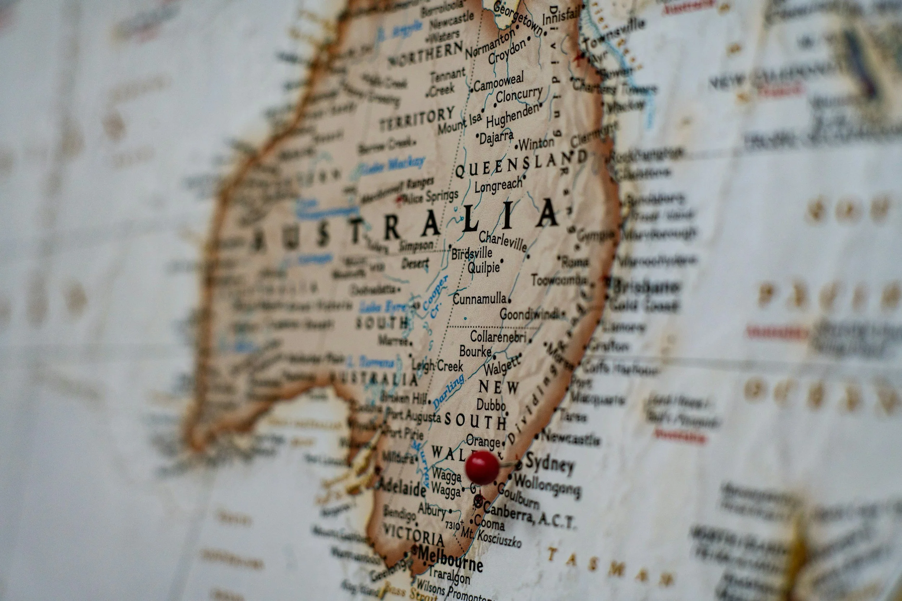
Australia’s history began with Indigenous people, who lived on the continent for around 50,000 years and developed rich cultures, languages, and traditions. In 1770, James Cook arrived on the east coast and claimed the land for Great Britain. A few years later, in 1788, the first British colony was established in Sydney, mainly as a penal colony for prisoners. Over time, more settlers arrived, and the colonies began to grow, developing agriculture, trade, and new cities. In 1901, the separate colonies united to form the country of Australia. Today, Australia is a modern and developed nation that continues to recognize and respect the culture and rights of its Indigenous people.
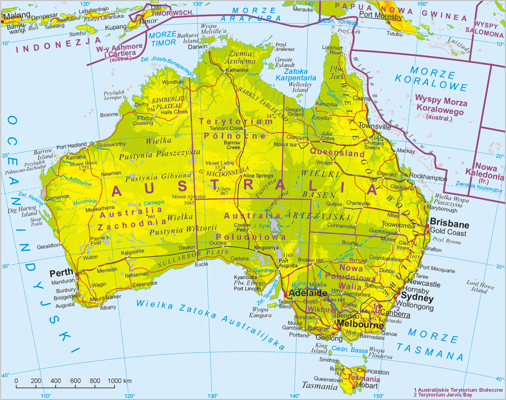
Australia is the smallest continent and at the same time one of the largest countries in the world. Most of its area is covered by deserts and dry regions known as the Outback. In the east there are the Great Dividing Range mountains, and the climate varies from tropical in the north to temperate in the south. Due to the harsh living conditions in the west, more people live on the eastern coast than in the western part of Australia.
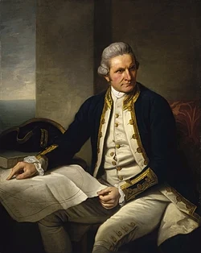
James Cook
He was a British explorer and navigator. In 1770, he reached the east coast of Australia and claimed it for Great Britain, which started British colonization.
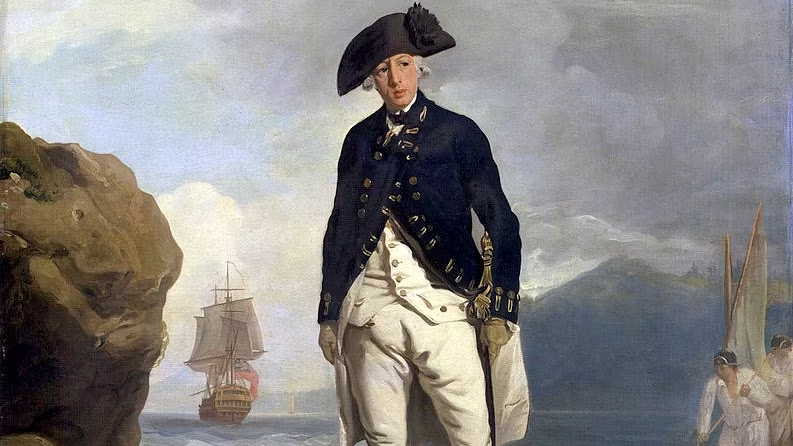
Arthur Philip
He was the first governor of New South Wales and the leader of the First Fleet. In 1788, he founded Sydney and established the first British colony in Australia.
Edith Cowan
She was the first woman elected to the Australian Parliament. She worked to improve the rights of women and children.
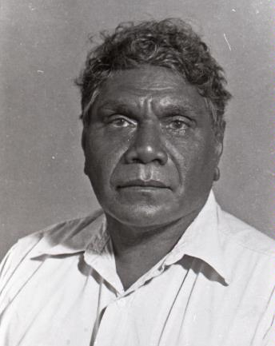
Albert Namatjira
He was an important Indigenous artist known for his landscape paintings. His work helped bring attention to Aboriginal culture.
Hugh Jackman
Actor and singer globally recognized for his role as Wolverine and his award-winning musical and dramatic performances.
Margot Robbie
Award-nominated actress famous for The Wolf of Wall Street, I, Tonya, and Barbie, also a producer shaping modern cinema.
Sia
She is a singer-songwriter famous for hits like Chandelier and her distinctive artistic style and vocal power.
Cathy Freeman
Olympic gold-medal sprinter celebrated for her iconic 400m win at the Sydney 2000 Olympics.
Australia’s population has changed dramatically over time. In 1788, before British settlement, the continent was home to about one million Indigenous Australians. By 1800, this number had fallen sharply to roughly 300,000. When the country federated in 1901, the total population reached around 3.8 million, and by 1950 it had grown to about 8 million. The most significant surge came after World War II, driven by large-scale immigration and rapid economic development. By 1980 the population had risen to 14.5 million, reached 19 million in 2000, and today stands at roughly 26–27 million.
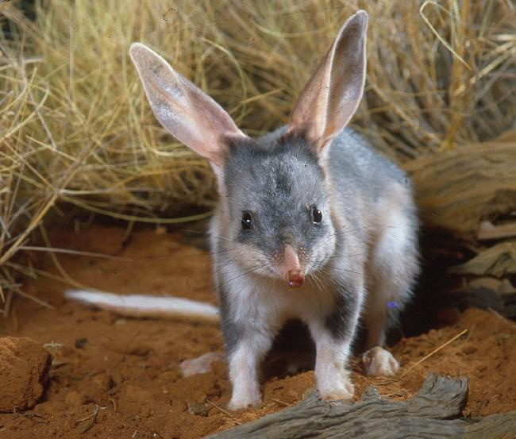
Australia Day celebrates the nation's culture on January 26th, while ANZAC Day on April 25th honors those who served in the military. Boxing Day Sales: Held on December 26th, this is the biggest shopping day of the year with massive discounts in all stores. Easter Bilby: This unique Australian symbol is used instead of a rabbit to raise awareness about protecting native endangered species. Most public holidays that fall on a weekend are officially observed on the following Monday to ensure a long weekend for everyone.
Since Christmas falls during the hot summer, many families celebrate with a cold seafood lunch or a barbecue at the local beach. "Carols by Candlelight" is a massive tradition where thousands of people gather in parks to sing together under the stars. Santa Claus is often seen wearing boardshorts and arriving on a surfboard or a boat to deliver presents in the heat.
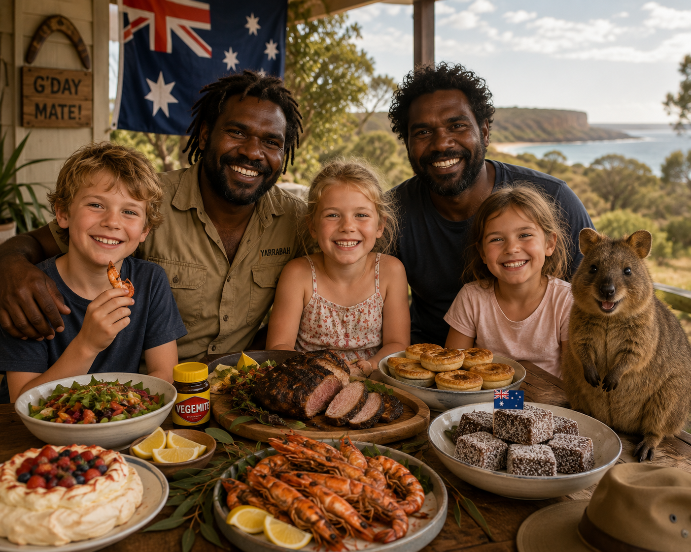
Meat Pie & Vegemite: Meat pies are savory snacks filled with minced meat, while Vegemite is a famous salty yeast spread eaten on buttered toast. Damper Bread: This is a classic soda bread that was historically prepared by early travelers by baking it directly in the hot coals of a campfire. Kangaroo meat: It is a very healthy and lean protein that is widely available in supermarkets as a popular alternative to beef. Barramundi Fish: This is the most iconic Australian fish, prized by locals for its delicate, buttery taste and white flaky meat.
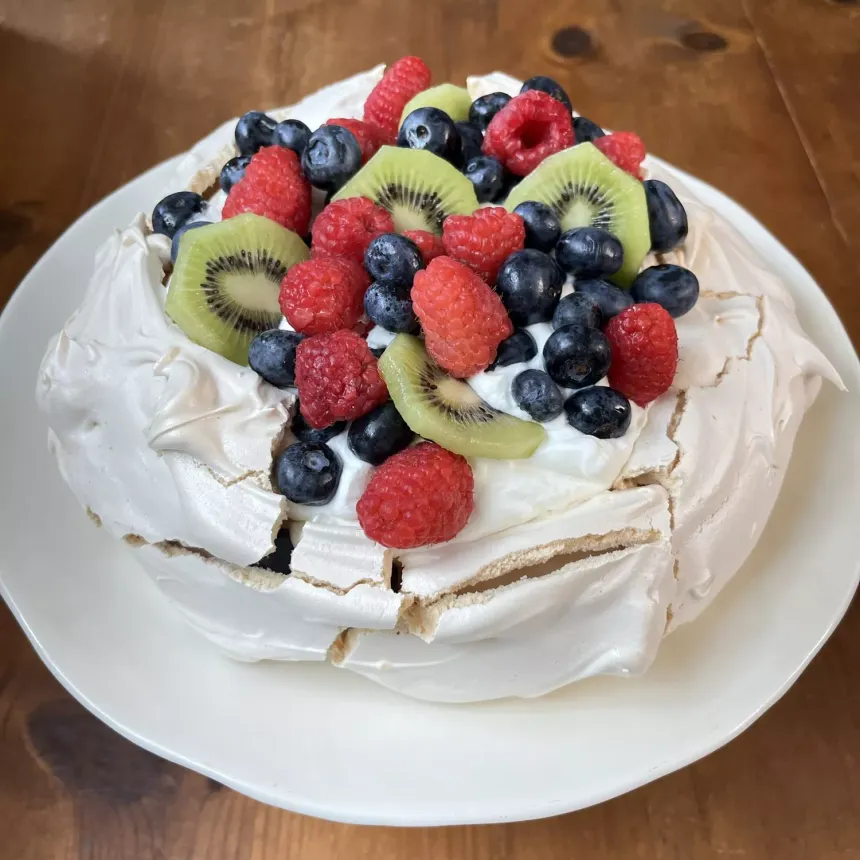
The Pavlova is a famous meringue-based dessert with a crispy crust and soft middle, traditionally topped with whipped cream and fresh tropical fruit. Lamingtons are square sponge cakes dipped in chocolate and coconut that are often sold at schools for charity. Many locals enjoy the "Tim Tam Slam," which involves using a chocolate biscuit as a straw to drink a warm beverage.
"No Worries" Philosophy: This is the famous Australian relaxed attitude towards life, focusing on staying positive and avoiding unnecessary stress. Outdoor BBQ Culture: Known as a "Barbie," this is a central social activity where friends gather to grill meat and enjoy the warm weather. The Australian lifestyle is heavily centered around the ocean, making surfing and swimming a daily routine for people living on the coast. Most public parks are equipped with free electric grills to encourage families to meet up and cook their meals outdoors.
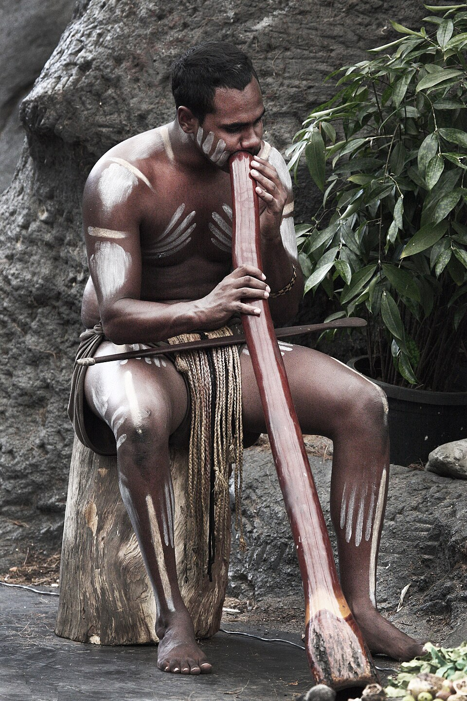
The Didgeridoo is a traditional wind instrument made from hollowed trees and is one of the oldest musical instruments in the world. Aboriginal Dot Painting is a famous art style that uses thousands of tiny dots to tell sacred stories about the creation of the land. Bush Tucker refers to the traditional knowledge of native plants and animals that have provided food and medicine for thousands of years.
Thongs & Akubra Hats: Thongs are the essential Australian flip-flops, while Akubra is a wide-brimmed felt hat used for sun protection in the Outback. Original UGG Boots: These sheepskin boots were originally created by surfers to quickly warm up their feet after leaving the cold ocean water. Boardshorts: These are casual, quick-drying shorts that have become the unofficial daily uniform for people living near the coast. The national "Slip, Slop, Slap" rule encourages everyone to wear hats and sunscreen to stay safe under the intense Australian sun.
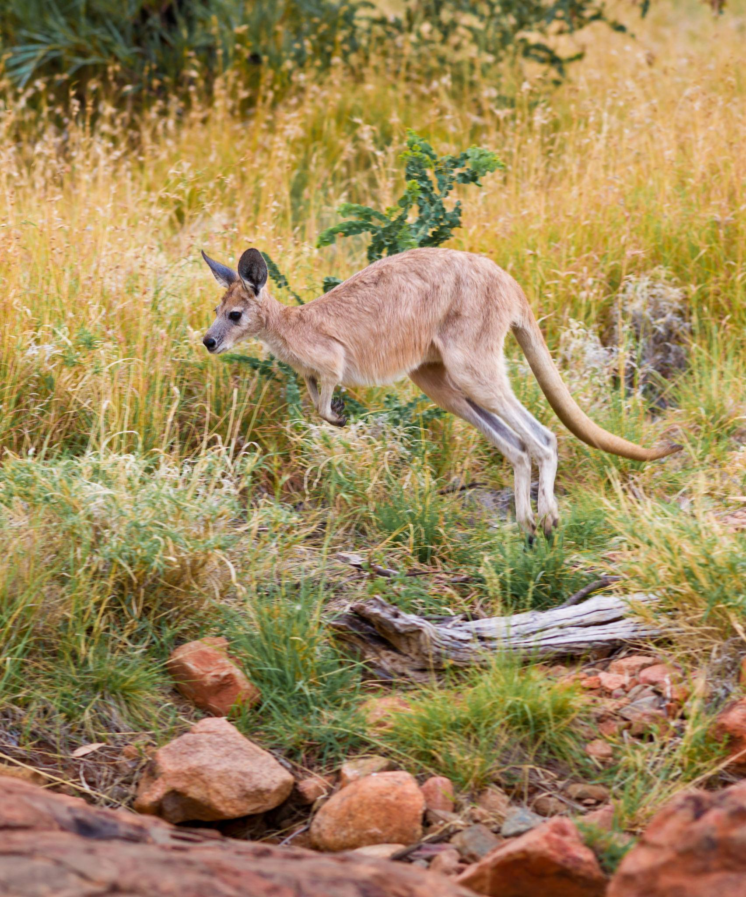
Kangaroo
Kangaroos are iconic macropods known for powerful hind legs and long-distance hopping. They occur in many habitats, from arid deserts to tropical rainforests, depending on the species.
Habitat: Open grasslands, woodlands, arid inland regions.
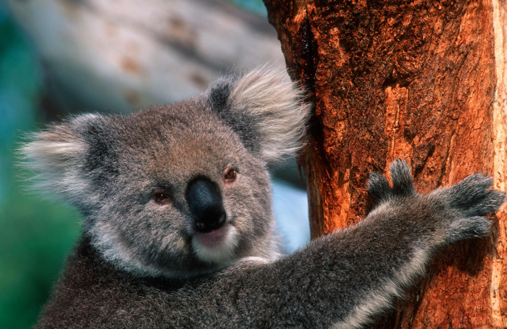
Koala
Koalas are tree-dwelling marsupials famous for their fluffy ears and eucalyptus diet. They are found mainly in eastern and southern forests, especially areas rich in eucalyptus trees.
Habitat: Wet and dry forests, coastal woodlands.
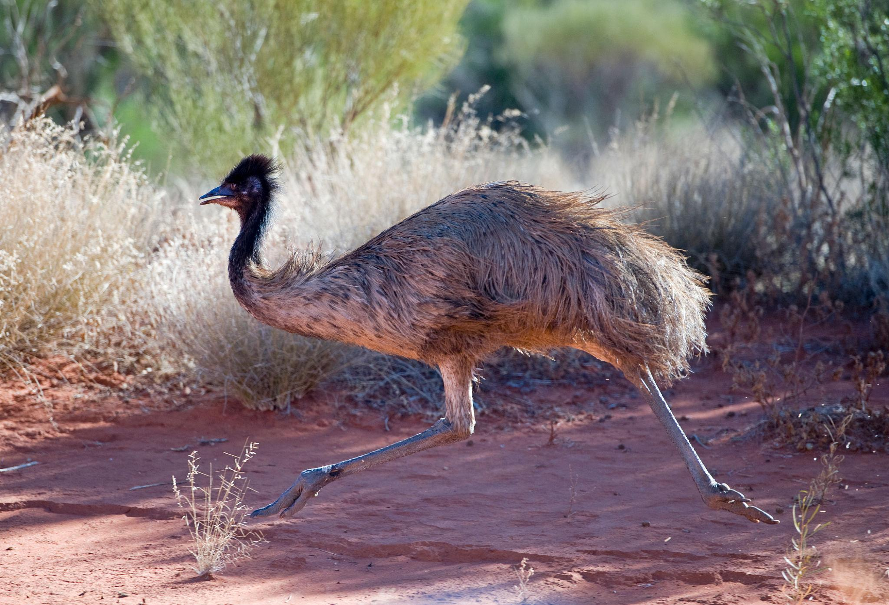
Emu
The emu is a large, flightless bird and one of Australia’s national symbols. It thrives in grasslands, savannas, and open woodlands across most of the continent.
Habitat: Open plains, woodlands, semi-arid regions.
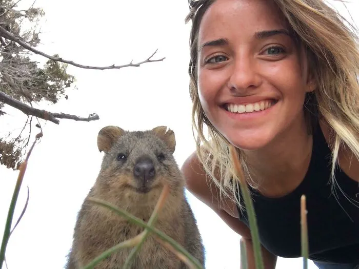
Quokka
A small, friendly-looking macropod found mainly on islands off Western Australia.
Habitat: Coastal scrub, forests, island woodlands.
Dominik Kubiaczyk, Wiktor Rogut, Kamil Michalak